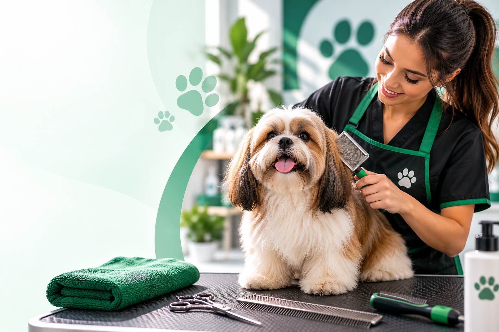
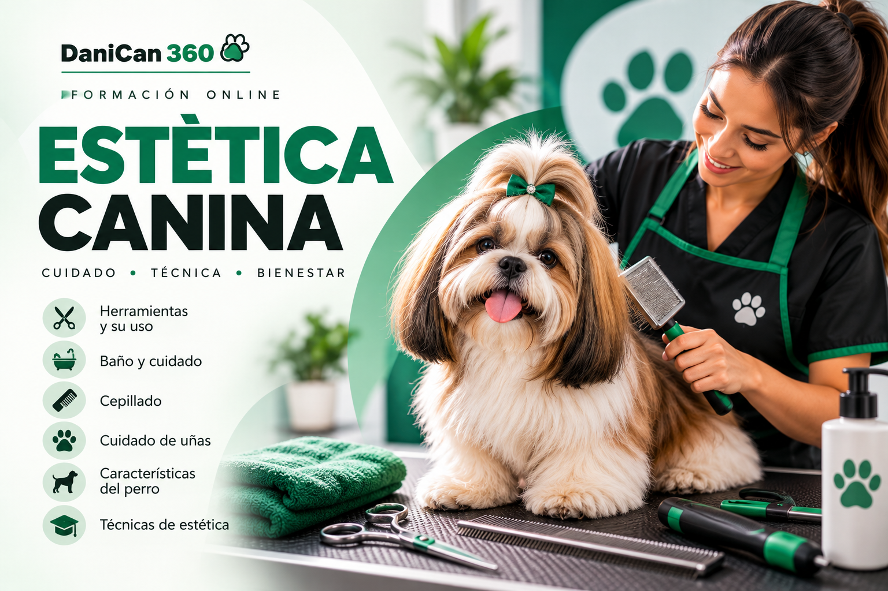

Herramientas
Conoce herramientas utilizadas dentro de la estética canina y aprende sobre su uso.
La estética canina va mucho más allá de cortar el pelo. Conocer las herramientas, el baño, el cepillado, el cuidado de las uñas y las características de cada perro puede marcar una gran diferencia.
DaniCan 360 participa como afiliado de este producto. Si realizas una compra mediante nuestros enlaces, podemos recibir una comisión sin costo adicional para ti.

Conoce antes de decidir.
El cuidado estético también implica conocer procedimientos, herramientas y necesidades que pueden variar entre perros. Por eso seleccionamos esta formación como una alternativa para quienes quieren acercarse al mundo de la estética canina desde una base educativa.
La formación aborda diferentes aspectos relacionados con el cuidado y la estética del perro.
Conoce herramientas utilizadas dentro de la estética canina y aprende sobre su uso.
Aprende aspectos relacionados con el baño y el cuidado del perro durante el proceso.
Comprende la importancia del cepillado y del manejo adecuado del manto.
Conoce principios relacionados con el cuidado y corte de las uñas del perro.
Aprende a considerar las características particulares del perro dentro del trabajo estético.
Acércate a diferentes conceptos y técnicas utilizadas dentro de la estética canina.
Personas que quieren ampliar sus conocimientos sobre el cuidado estético de los perros.
Quienes disfrutan aprender sobre bienestar, cuidado y manejo de perros.
Una alternativa para conocer mejor esta actividad antes de decidir hasta dónde quieres llevar tu aprendizaje.
No queremos mostrarte un curso simplemente porque exista. Nuestro objetivo es ayudarte a conocer de qué se trata y permitirte revisar la información oficial antes de tomar una decisión.

Curso digital orientado al aprendizaje de diferentes aspectos relacionados con estética, cuidado y manejo del perro.
Algunos enlaces de esta página son enlaces de afiliado. Esto significa que DaniCan 360 puede recibir una comisión si decides realizar una compra después de utilizar uno de ellos, sin que esto represente un costo adicional para ti.
La compra, el pago, las condiciones de acceso, garantías y entrega del producto son gestionados por la plataforma y el productor correspondientes.
Revisa directamente la información oficial, contenido, precio y condiciones antes de tomar tu decisión.
Ver precio y acceder → Este botón te llevará a la página oficial del producto.